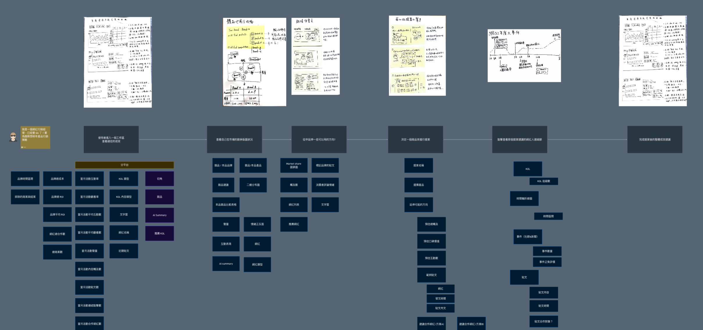
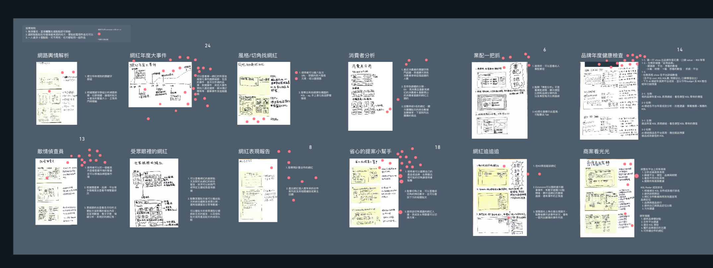
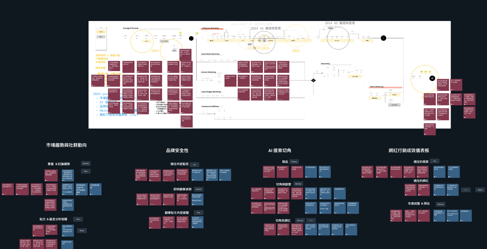

About Me
Transforming Ideas into Impactful Experiences
I'm a Senior Product Designer with 9 years of experience building digital products in fast-paced Agile environments — specialized in UI/UX for AI SaaS and B2B marketing platforms.
At iKala, I've spent 8 years on the same product family — from early-stage MVP to a full AI-powered platform now serving 50,000+ brand clients — redesigning the subscription and onboarding flow to drive 300% revenue growth, and building the design system behind the Kolr rebrand.
Based in Taipei and relocating to Tokyo — I hold a valid Japanese visa and don't require sponsorship. Open to Senior Product Designer roles.
How I Work
User-Centered
Design decisions backed by user research — 50+ enterprise client interviews inform how I prioritize.
Business Impact
Design tied to measurable outcomes — from revenue growth to adoption and retention.
Data-Driven
Analytics (GA, Amplitude, Hotjar) and user feedback shape iteration, not just intuition.
Cross-Functional
Embedded in Agile sprints with product and engineering — UI specs and prototypes as shared language.
Design Process
How I take a feature from problem to launch
Every case study on this site follows the same core process. The case studies focus on the decisions unique to each feature; this is the shared approach behind all of them. It runs inside 2–4 week sprint cycles, so larger features are shaped in stages and refined release by release.
Annual & quarterly design sprints
Each roadmap starts with a design sprint run together with the product manager: map the whole influencer-marketing flow, collect the problems along it, then vote on what matters most.



Experience
AI-powered search & LLM response UX, subscription & onboarding redesign (+300% revenue), Kolr rebrand rollout, Chrome extension (20,000+ downloads), i18n from the Chinese-language base product into Japanese, English, and Thai.
End-to-end design from MVP to scaled features: registration/login, search, profiles, payments, contract management, insight reports. Multi-region redesigns improving SEO and conversion.
0-to-1 product: designed, built, and grew two international social brands to 10,000+ users. Selected for AppWorks Accelerator Batch #13.
Tracked YouTube ad performance and competitor placements for client brands.
Skills & Expertise
Design & Prototyping
- Figma
- Photoshop / Illustrator
- Interactive Prototyping
- UI Spec Documentation
Product & Process
- Design Systems
- User Research
- Agile / Scrum
- i18n / Localization
- Usability Testing (in user interviews)
- Slack / Notion (collaboration & docs)
Front-End & AI Tools
- HTML / CSS, Bootstrap
- Chrome Extension UX Design
- Claude Code
- Gemini / Prompt Engineering
Analytics & AI Product
- Google Analytics, Amplitude
- AI Search UX
- Automated Reporting
- LLM Response Interfaces
Languages
Location Preference
Currently seeking opportunities in:
Tokyo, Japan
Based in Taipei, Taiwan · valid Japanese visa, no sponsorship required.